很久没和大家见面了，之前这个系列也发过帖子大致介绍一下，但是并没有涉及到具体的技术讲解，现在有时间准备继续跟进一下这个系列，希望帮助到对这方面有兴趣的朋友，本篇文章我们以水果忍者这个游戏为例子讲解一下简单入门的游戏修改技术。
1、CE （游戏内存修改器）
Cheat Engine，简称CE，是由Eric Heijnen(网名“Dark Byte”)开发的一款开源软件，主要功能包括存储器扫描，十六进制编辑，指令反汇编，内存数据修改等功能，是一款强大的游戏修改器。Cheat Engine是最常见的游戏外挂工具，通过Cheat Engine，用户可以快速查找和修改游戏数据及更改游戏处理逻辑。
下载地址：
链接：https://pan.baidu.com/s/1pLebzsB 密码：c4el
2、水果忍者（游戏）
下载地址：
链接：https://pan.baidu.com/s/1o8A77RG 密码：fsg5
在计算机科学中，指针（Pointer）是编程语言中的一个对象，利用地址，它的值直接指向（points to）存在电脑存储器中另一个地方的值。由于通过地址能找到所需的变量单元，可以说，地址指向该变量单元。因此，将地址形象化的称为“指针”。意思是通过它能找到以它为地址的内存单元。
我们可以想象一棵苹果树，树有根，树上也有苹果， 某个苹果对应某个偏移，而树根就是基址，通过基址往上找就能找到某个苹果。而找到的这个苹果，相对于有个偏移。通过基址+偏移就能确定是哪个苹果。
因为游戏退出基址不会变化，只有游戏更新后才会变化，而要是用找到的内存地址，例如：血的内存地址，游戏退出是会变化的，不方便我们编写辅助调用。
步骤1、打开Cheat Engine
步骤2、运行水果忍者游戏，进入游戏后我们先Esc暂停一下
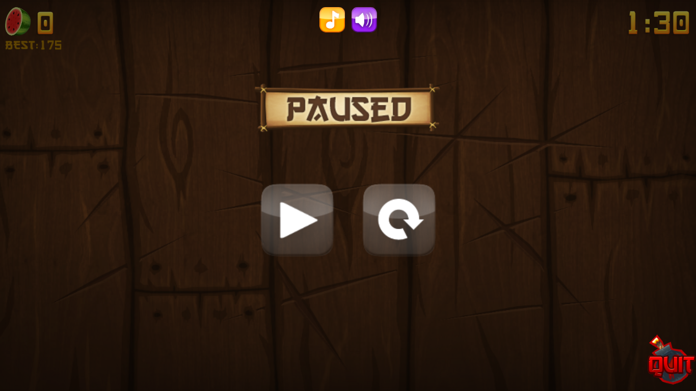步骤3、切换到Cheat Engine，点击小电脑打开进程，在进程列表找到水果忍者然后点击打开
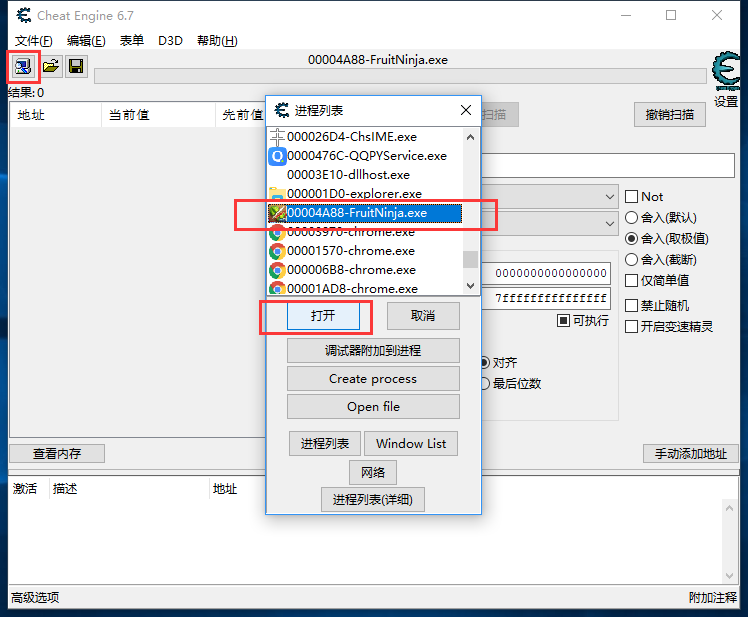步骤4、接下来我们使用CE的搜索功能，这里我们有两种搜索方法，精确搜索和模糊搜索。这里我们使用精确搜索。我们看时间是1:30也就是90秒，这里我们在数值栏输入90，数值类型我们选择所有类型。点击首次扫描。
步骤5、这里我们看结果1247个，这么多到底哪个才是呢？不用怕，我们切换到游戏。玩下游戏，然后暂定。 。
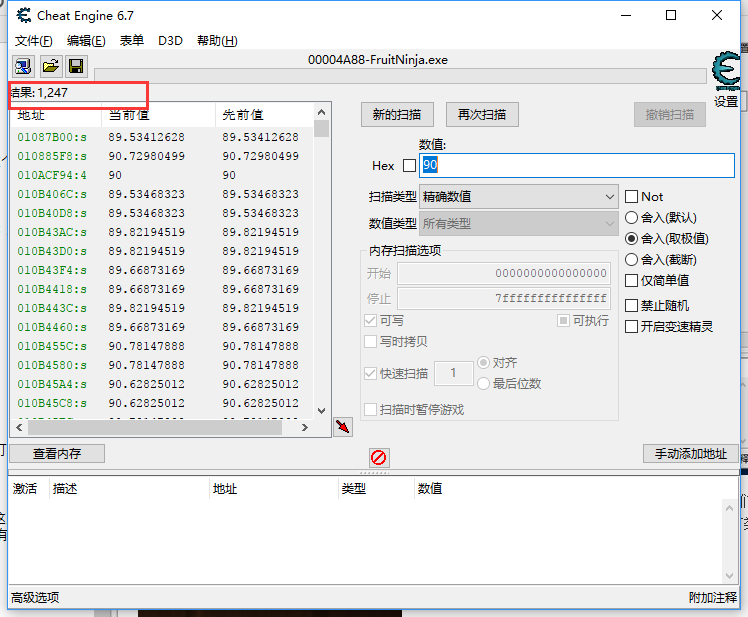步骤6、现在我们可以看时间是1:22也就是82秒，我们继续在数值栏中输入82然后点击再次扫描。
步骤7、接下来我们看结果就剩下两个，地址0617615C修改后会自动还愿，地址0AAE155C就是时间地址，我们双击它。
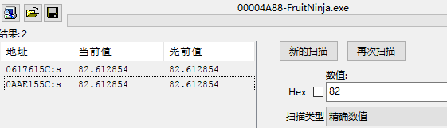步骤8、这样这个地址就会出现在下面地址栏中方便我们查看了。
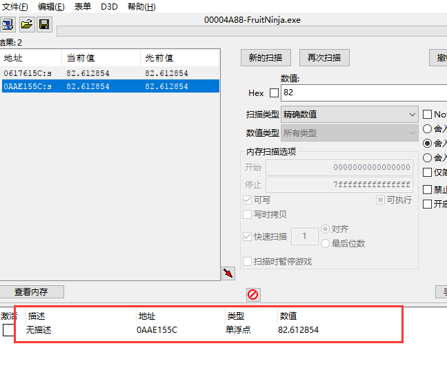步骤9、我们在数值位置双击，修改数值为100，可以发现游戏时间变成了1:40。
现在游戏时间在内存的地址我们已经找到了，但是我们下次启动游戏的时间，这个地址是变化的，正如我们上文所说我们需要找到游戏时间的基址。
步骤一、在下面的地址栏中我们右击然后选择找出是什么改写了这个地址
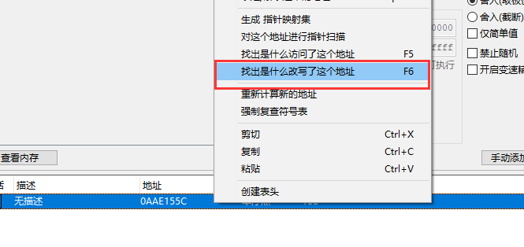步骤二、运行游戏，然后暂定返回。然后我们返回查看可以看到几条指令，我们选择查看详细信息，可以看到可能的指针数值0AAE14E0以及偏移量7C。
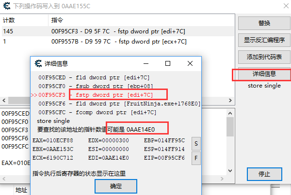步骤三、我们点击新的扫描，勾选数值栏中的Hex，然后输入我们的指针数值进行搜索。可以发现我们找到了三个地址。
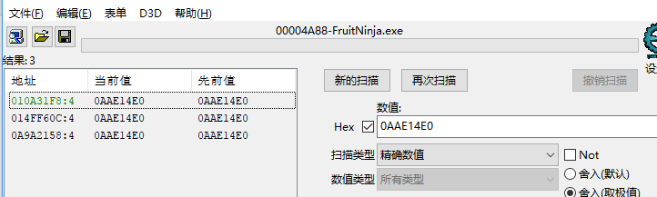为什么有个地址是绿色显示的呢？
绿色地址就是静态地址了，也就是我们的基址。
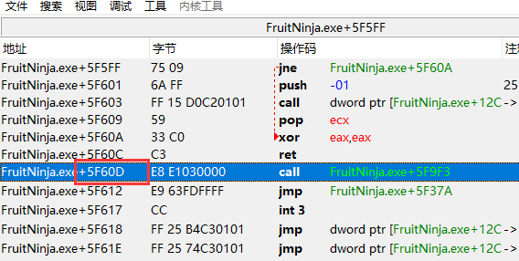上图我们可以发现其实它不变的原理就是模块地址。
步骤四、找基址接下来就简单了，我们在下面地址栏中点击手动添加地址。勾选指针，我们将找到的基址输入，然后再输入我们上面得到的偏移量7C，不要忘记把数值类型改为Float，点击确定。
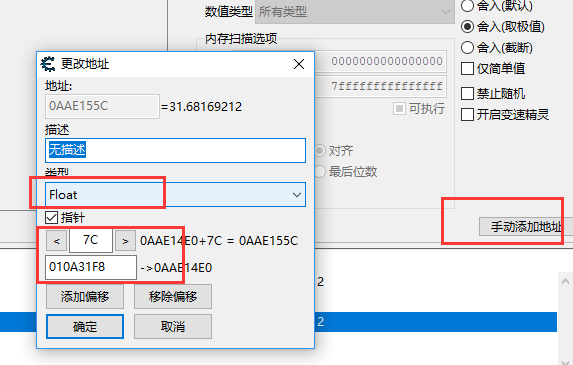步骤五、可以发现我们指针所指的数值和之前找到的时间地址的数值是一样的，我们修改指针所指的数值，时间地址的数值就会跟着变化。
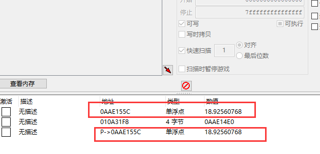步骤六、我们保存一下。
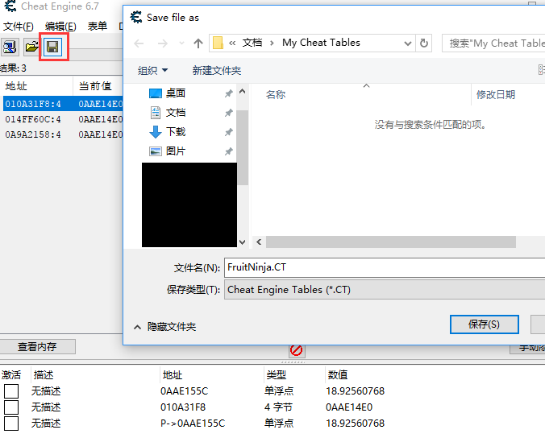步骤七、我们重启游戏，关闭CE重新加载进程，将我们之前保存的地址加载进来
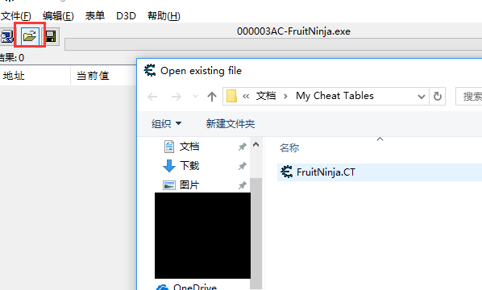步骤八、可以发现游戏时间地址已经变为0AFCAC18+7C=0AFCAC94，不过我们有基址就不用去找啦。
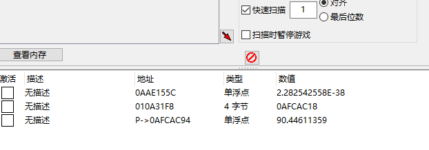编写修改器就是涉及到编程方面的知识啦，这里我不考虑修改器界面设计问题，所以我就直接选择用c语言来编写这个修改器。涉及编程大家知道的，不知道有多少人想学啊，所以这里就不在本文介绍，看大家回复意见了。最后附上一张本人战绩图。
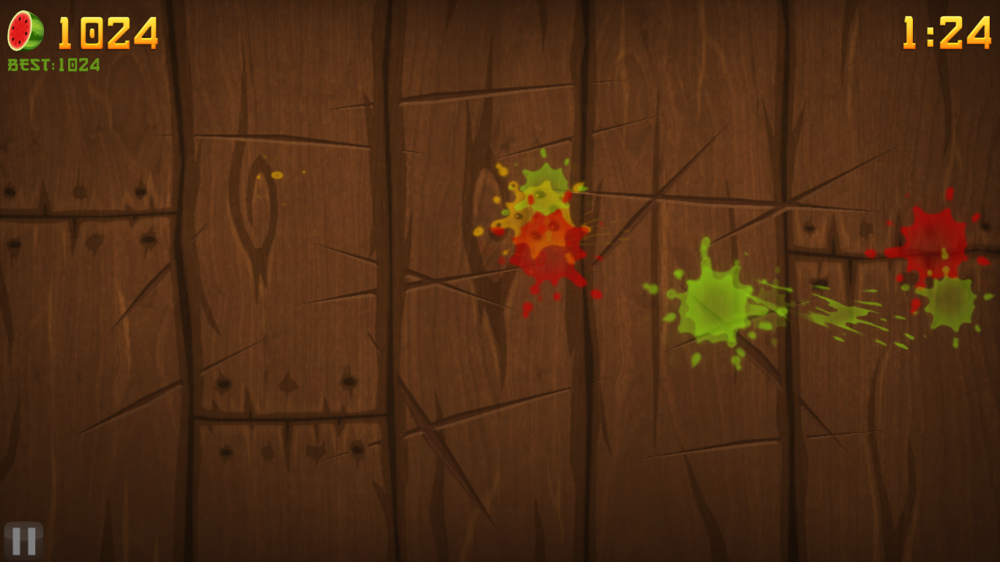